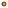

<!DOCTYPE html>
<html>
<head>
	
	<title>Dot density map with Turf.js</title>

	<meta charset="utf-8" />
	<meta name="viewport" content="width=device-width, initial-scale=1.0">
	
	<link rel="shortcut icon" type="image/x-icon" href="docs/images/favicon.ico" />

    <link rel="stylesheet" href="https://unpkg.com/leaflet@1.6.0/dist/leaflet.css" integrity="sha512-xwE/Az9zrjBIphAcBb3F6JVqxf46+CDLwfLMHloNu6KEQCAWi6HcDUbeOfBIptF7tcCzusKFjFw2yuvEpDL9wQ==" crossorigin=""/>
<script src="js/jquery-3.2.1.min.js"></script>
<script src="https://unpkg.com/leaflet@1.6.0/dist/leaflet.js" integrity="sha512-gZwIG9x3wUXg2hdXF6+rVkLF/0Vi9U8D2Ntg4Ga5I5BZpVkVxlJWbSQtXPSiUTtC0TjtGOmxa1AJPuV0CPthew==" crossorigin=""></script>
<script src='js/csv2geojson.js'></script>

<script src='js/turf.min.js'></script> 
<script src="js/leaflet-slider.js"></script>

<!-- control -->
<script src="js/Leaflet.Control.Custom.js"></script>

<style>
body {
    padding: 0;
    margin: 0;
}
html, body, #map {
    height: 100%;
    width: 100vw;
}
</style>
	
</head>
<body>
	<div id="map"></div>
	
<script>

	var clear = L.tileLayer('https://stamen-tiles.a.ssl.fastly.net/toner-lite/{z}/{x}/{y}.png', {
	  attribution: '<a href="htpps://github.josema.mira">Jose Manuel Mira</a> '+
	  '| <a href="https://systems.jhu.edu/research/public-health/ncov/">JHU CSSE</a> '
	});
    var dark   = L.tileLayer('https://api.mapbox.com/styles/v1/{id}/tiles/{z}/{x}/{y}?access_token=pk.eyJ1IjoibWFwYm94IiwiYSI6ImNpejY4NXVycTA2emYycXBndHRqcmZ3N3gifQ.rJcFIG214AriISLbB6B5aw', {
		maxZoom: 18,
		attribution: '<a href="https://www.openstreetmap.org/">OpenStreetMap</a>' +
		' | <a href="https://www.mapbox.com/">Mapbox</a> ',
		id: 'mapbox/dark-v9',
		tileSize: 512,
		zoomOffset: -1
	});
	var dark2 = L.tileLayer('&copy; https://{s}.basemaps.cartocdn.com/dark_nolabels/{z}/{x}/{y}{r}.png', {
		attribution: '&copy; <a href="https://systems.jhu.edu/research/public-health/ncov/">JHU CSSE</a>&copy; <a href="https://www.openstreetmap.org/copyright">OpenStreetMap</a> contributors &copy; <a href="https://carto.com/attributions">CARTO</a>',
		subdomains: 'abcd',
		maxZoom: 19
	});
	
	//var map = L.map('map').setView([0,0], 2);
	var map = L.map('map', {
    center: [0,0],
    zoom: 2,
    layers: [dark, clear]
});
	var baseMaps = {
		"Oscuro": dark,
		"Claro": clear
	};
	
	L.control.layers(baseMaps).addTo(map);
	
	
var leyenda = L.control.custom({
	position: 'bottomleft',
	content : '<div class="panel-body"><div class="progress" style="margin-bottom:0px;"> = X infected with COVID19 (accumulated) per point (19 Nov 2021) </div></div> ',
	classes : 'panel panel-default',
	style   :
	{
		width: '200px',
		margin: '20px',
		padding: '0px',
	},
});
leyenda.addTo(map);


slider = L.control.slider(function(value) {
    			console.log(value);    			
    			cases(value);
			}, {
			min: 10000,	
    		max: 100000,
    		value: 100000,
    		step:10000,
    		size: '250px',
    		orientation:'horizontal',
    		id: 'slider',
    		title: 'Casos Covid-19',
    		position:'bottomleft'  //'topleft', 'topright', 'bottomleft' or 'bottomright'
		}).addTo(map);


// paises
var paises = new L.geoJson();

var geojsonMarkerOptions = {
    radius: 2,
    fillColor: "#fc7430",
    color: "#732600",
    weight: 1,
    opacity: 1,
    fillOpacity: 0.8
};

var FG= new L.FeatureGroup();
var gj = L.geoJSON();

function cases(cases){
$.ajax({
	dataType: "json",
	url: "data/paises-covid19.geojson",
	success: function(data) {
		//
		if(map.hasLayer(FG)){ 
			map.removeLayer(FG);
			//console.log('se ha borrado');
		}

		//console.log(FG.getLayers());
		FG.addTo(map);
		FG.clearLayers();
		
		$(data.features).each(function(key, data) {
			paises.addData(data); // opcional para ver el geojson de paises.
			
			// COVID-19
			var covid19 = data.properties.Confirmed;
			var np = (covid19/cases).toFixed(0); // numero de puntos

			var i=0;
			while (i < np) {			
				var polygon = turf.polygon(data.geometry.coordinates, { name: data.properties.name });
				var bbox = turf.bbox(polygon);
				var position = turf.randomPosition(bbox);				
				var point = turf.point([position[0],position[1]]);
				if ( turf.booleanPointInPolygon(point, polygon) == true) {					
					gj = L.geoJSON(point, {
						pointToLayer: function (feature, latlng) {
							return L.circleMarker(latlng, geojsonMarkerOptions);
						}
					});
					gj.addTo(FG);					
					i++;					
				} 
			}
		});
	}
});

}


</script>
	
<body>
</html>
